AInfer-PD：面向分布式 MoE Rollout 的通信安全原位 P/D 复用
这篇论文由蚂蚁集团 Guowei Wang、Chaokun Yang 等人完成，研究对象不是通用在线聊天服务，而是大规模强化学习中的 agentic rollout worker。它关心一组有因果依赖的多轮轨迹多久才能全部完成，并提出 AInfer-PD：在同一套 GPU、模型权重和 KV cache 上复用 prefill（P）与 decode（D），同时为相交的 attention collective 建立一致顺序，并把 DeepEP 的两条通信路径拆成 phase-owned 状态。论文于 2026 年 9 月 1 日公开，入口为 arXiv:2609.00993。作者未提供可核验的 AInfer-PD 独立代码仓库；文中引用的 DeepEP 仓库是依赖，不应当作本文实现已经开源的证据。
多轮 agentic rollout 会持续产生新的 prefill，而其他轨迹仍在 decode；现有原位复用在大型 MoE 上既不能保证相交 collective 的跨 rank 一致顺序，也不能隔离 DeepEP 两条路径的可变通信状态。
1. 背景和问题
在单轮推理里，prefill 往往集中发生在请求开始，随后进入逐 token decode；但 agentic RL 的一条轨迹会反复经历“模型生成动作—等待工具或环境响应—把新观察追加到上下文—对新增上下文做 continuation prefill—继续生成”。不同轨迹的工具延迟、输出长度和终止轮次不一致，因此某些轨迹返回新的 P 工作时，另一些轨迹仍处于 D。系统优化目标也随之变化：训练不是在意某一个请求的瞬时吞吐，而是要尽快收齐固定的一组依赖轨迹。D 被延迟，会推迟下一次环境交互；已返回的 P 被延迟，则会推迟该轮后续 D，两者都可能拉长 rollout 的关键路径。
论文用下面的空档定义解释这种压力。对依赖 continuation $i$，上一轮 D 完成到下一轮 P 被释放之间的空档为：
符号解释：$t_{D,i}^{\mathrm{complete}}$ 是第 $i$ 轮 decode 的完成时刻，$t_{P,i+1}^{\mathrm{release}}$ 是环境返回后下一轮 prefill 可进入系统的时刻，$g_i^{\mathrm{idle}}$ 包括环境等待和客户端处理。空档短时，新的 P 很快压到仍在运行的 D 上，P/D 共存频繁；空档长时，系统有更多 D-only 区间。这也是后文 P1-P4 等待分布实验的因果入口，而不是一个仅用于描述 trace 的统计量。
现有解法主要有两条。P/D disaggregation 把两相放到独立设备池，干扰小，但需要额外模型副本、跨池 KV 传输和协调；多轮轨迹每轮都可能重复这一交接。原位 multiplexing 则共享设备、权重和 KV，通过 admission、chunked prefill 或资源分区控制局部争用，省去第二套模型与 KV 迁移，却把正确性问题留给同一组设备上的通信调度。AInfer-PD 选择后一条路线，但要求它不只“尽量重叠计算”，还必须发布可验证的跨 rank 顺序契约。
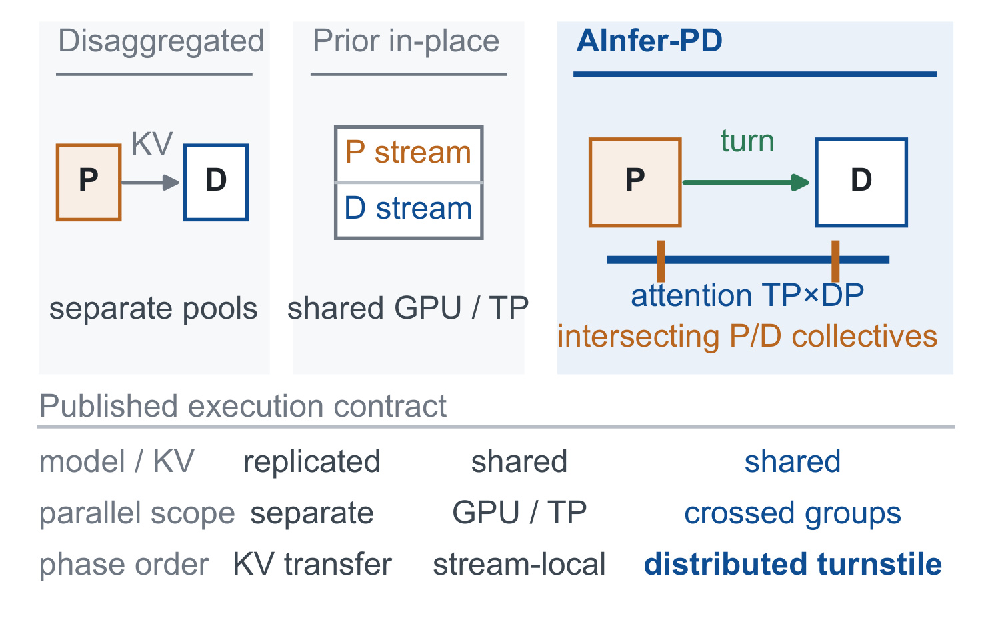
Figure 1 把差别压缩到三个维度。左侧 disaggregated 方案的 P、D 各有模型实例，边界上要搬 KV；中间既有 in-place 方案共享 GPU/TP，用本地 stream 顺序做隔离；右侧 AInfer-PD 同样共享 model/KV，却明确面对“crossed groups”，通过 distributed turnstile 管理 phase order。图下方的 published execution contract 很重要：作者不是宣称所有通信都并发，而是指出哪部分可以共享、哪一对必须排序。这样既保留原位复用的容量优势，也为大型 MoE 中的跨 communicator 行为补上可检查契约。
第二个困难来自并行拓扑。设 world size 为 $g$，attention data parallel 与 expert parallel 的宽度分别为 $d$ 和 $e$，则：
符号解释：ATP 是每个 attention-DP replica 内的 tensor parallel 宽度，ETP 是每个 expert-parallel 分组内的 tensor parallel 宽度。实际 MoE 路径中，变长 P 可能走 eager 的模型全组 TP AllReduce，图重放 D 则走 DP-attention 的 ReduceScatter/AllGather。两个 process group 相交，而各 attention replica 又独立调度，于是 rank 0–1 可能先看到 D 后看到 P，rank 2–3 却先看到 P 后看到 D。即使每条本地 stream 自身顺序合法，NCCL 在同一设备上跨 communicator 仍要求 rank 间一致 launch 顺序；简单创建两个 communicator 不能自动产生这种偏序。
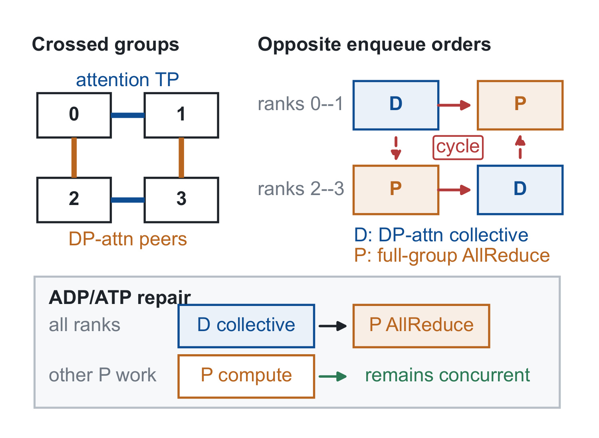
Figure 2 左边显示 attention-TP 横向连接 rank 0–1，DP-attention 纵向连接 0–2、1–3；右上把反序画成闭环：一组 rank 的 D collective 等待被 P 占据的 peer，另一组的 P AllReduce 又等待被 D 占据的 peer，形成设备进展 cycle。下方 repair 不是全局禁止 P/D overlap，而是让所有 rank 对冲突对采用 D collective $ ightarrow$ P AllReduce 的同一方向，同时让其他 P compute 继续并行。这一点界定了论文的核心：问题不是常规的算力争抢，而是分布式执行顺序可能不安全。
第三个困难是 DeepEP。大批 P 适合 normal path，小批、延迟敏感的 D 适合 low-latency path，但原 runtime 把两者当作互斥模式，其 buffer、counter、workspace、event 与传输协议状态会被共同修改。若 P 活跃时 D 被迫退回 normal path，延迟优势消失；若直接并发，两条路径又可能踩同一状态。因此论文必须同时解决两类独立问题：attention collective 的跨 rank 顺序，以及 expert communication 的可变状态所有权。只完成其中之一，都不足以让分布式 MoE 的 P/D 真正安全共存。
从关键路径角度看，作者把“完成一批请求”与“完成一批轨迹”都纳入评测也有必要。单个请求更早出首 token，不代表它所属轨迹更早触发工具；一条轨迹更快完成，也不代表训练所需的全部样本已经齐备。多轮依赖把系统变成释放—等待—再释放的闭环，P 的延迟会传到本轮 D，D 的延迟又会推迟下一次环境调用。由此，AInfer-PD 的优化空间并非把某个 kernel 单独加速，而是减少 P 对 D 的整段阻塞，同时不能让同步协议把已提交 P 工作强制排空。这个目标决定了后文为什么以固定工作量 makespan 为第一指标，并用 D wait、TTFT 和轨迹完成时间约束它是否只是转移等待。
2. 方法
2.1 共享模型上的原位 P/D 执行
AInfer-PD 的控制入口是 rank-shared planner。每个 engine iteration 先提交已经 ready 的 D 行、CUDA Graph 状态和可选 MTP lookahead，再用剩余 batch 与 KV 容量接纳 P。P、D 使用同一份权重、KV cache 与 GPU pool，区别由显式 phase identity 一路传到 attention collective 和 expert backend，而不是从 host thread 或 CUDA stream 猜测。D-first admission 保证有因果依赖的下一次环境交互不会被大 P 批次无界压住；共享 KV 则避免每轮 continuation 都跨池搬运状态。
单次 P 执行常常比一个 D iteration 长，因此系统不等待整段 P 完成，而把它切成由 backend 发布的安全边界限定的 segment。每一轮 turnstile 先让所有 rank 以一致顺序 enqueue 一个 D iteration，再允许一个 P segment 继续到下一个边界。这里的“边界”只表示 P 暂停发出新的冲突通信，不等于排空此前已经提交到 GPU 的 P 计算；这让 D 可以在长 P 内多次前进，而非退化成 P 完整结束后才轮到 D。
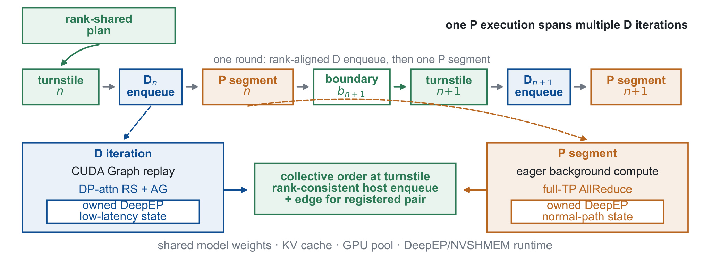
Figure 3 上半部是控制序列：rank-shared plan 进入 turnstile，依次形成 $D_n$ enqueue、$P_n$ segment、边界 $b_{n+1}$、下一轮 turnstile，再到 $D_{n+1}$ 与 $P_{n+1}$。下半部把两条数据路径展开：D 用 CUDA Graph replay 和 DP-attention RS+AG，并持有 low-latency DeepEP 状态；P 以 eager background compute 运行 full-TP AllReduce，并持有 normal-path DeepEP 状态。中间绿色方框只给注册的冲突对添加 rank-consistent host enqueue 与 device-order edge。最底部的 model weights、KV cache、GPU pool、DeepEP/NVSHMEM runtime 仍共享，说明隔离发生在可变通信域，而不是复制整套模型。
2.2 Rank-aligned segment turnstile 与选择性设备序
每个 P epoch $e$ 发布单调边界 $i=0,1,\ldots$。控制器保存已到达的最大边界 $r$、当前许可端点 $p$、正跨度 $K$ 和任务状态；P 到达 $i=p$ 后停止发布新通信，D 完成两次 all-rank CPU rendezvous 所界定的 enqueue 相位后，活动 rank 执行状态更新：
符号解释：$p$ 决定本轮 P 最多前进到哪个安全端点，$K$ 决定一次放行跨越多少 backend boundary。初始 $p=0$ 时，ready D 在 P 进入 CUDA 前取得顺序；若 D 已经 enqueue，则 P 可以从 $p=K$ 开始。控制器拒绝 stale/duplicate epoch、缺失 producer、非单调发布和越过 permit 的端点，因此它不仅调速，也保护跨请求生命周期不串线。
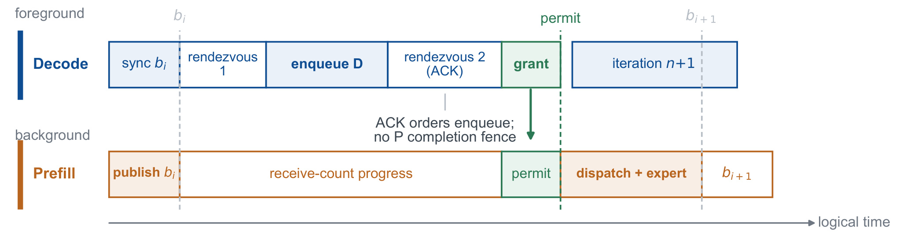
Figure 4 的横轴是逻辑时间。前景 D 先等待 P 发布 $b_i$，进入 rendezvous 1 后 enqueue D，再通过 rendezvous 2 的 ACK 证明“所有 rank 的 launch API 已返回”，最后 grant 下一个 permit；后台 P 在 $b_i$ 后仍可推进 receive-count，只有 dispatch+expert 数据移动同时拿到 counts 与 permit 才继续。图中明确写着 ACK orders enqueue、no P completion fence，因此它没有把 host 协调误写成 GPU 完成屏障。跨度 $b_i$ 到 $b_{i+1}$ 可以跨多个 backend boundary，策略可在控制开销与 D 等待之间调节。
只有 host 一致还不够，因为独立 CUDA stream 之间没有天然设备序。AInfer-PD 在 crossed-path boundary 把注册的 P full-TP AllReduce 路由到 D graph-launch stream，利用 stream FIFO 建立局部执行偏序；turnstile 再让所有参与 rank 对这条偏序达成一致。对 epoch $e$ 的第 $j$ 个内部步骤和 rank $r$，协议要求：
符号解释：$G_{e,j}^{r}$ 是 D graph launch，$R_{e,j}^{r,-}$ 与 $R_{e,j}^{r,+}$ 是端点许可前后相邻的 P collective，$\prec_r$ 是共享 stream 上的 enqueue 与 FIFO execution order。所有 rank 都得到相同的 $D\rightarrow P$ 方向，Figure 2 所需的相反跨 rank 顺序无法闭环。该论证只覆盖已注册 collective 对、matched participation、健康 transport 与公平 CUDA/NCCL progress；它不是对任意 collective 的通用 deadlock-free 证明。
2.3 DeepEP 通信状态隔离与安全 prefill 边界
DeepEP 的 normal-P 与 low-latency-D 可以共享 NVSHMEM 初始化、rank topology、物理链路、模型权重和 KV，但不能共享会被通信 kernel 修改的对象。AInfer-PD 因此给 P 分配 normal buffer、counter、workspace、stream、event 与 QP range，给 D 分配 low-latency 对应对象以及独立 double-buffer index。phase identity 显式选择这些对象，D 的 CUDA Graph 地址保持稳定，P 使用独立 eager 输入，也不能重置 D metadata。所有权隔离的粒度是“可变协议与传输状态”，不是把 NIC 带宽、cache 或未保留 SM 也切成绝对独占。
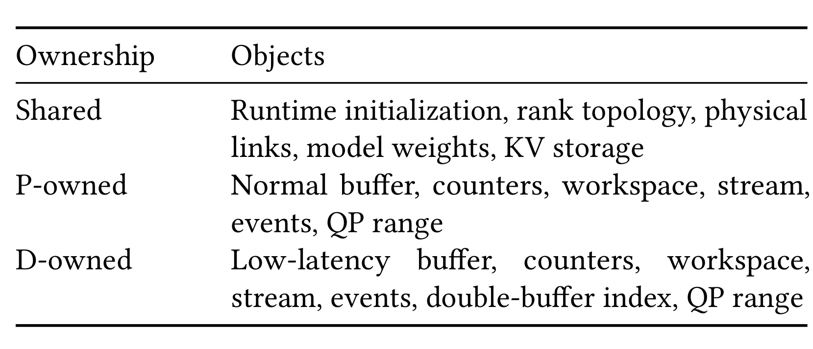
Table 1 的三行正好是一份实现审计表。Shared 行只含 runtime initialization、rank topology、physical links、model weights 和 KV storage；P-owned 行覆盖 normal buffer、counters、workspace、stream、events 与 QP range；D-owned 除 low-latency 对象外还多出 double-buffer index。复现时若把 buffer 分开却仍共享 counter、event 或 QP 索引，表面上内存不别名，协议进度仍可能互相推进。相反，把整个 NVSHMEM runtime 复制一份会失去原位设计的容量收益，因此这张表给出的边界比“P/D 各用一条 stream”严格得多。
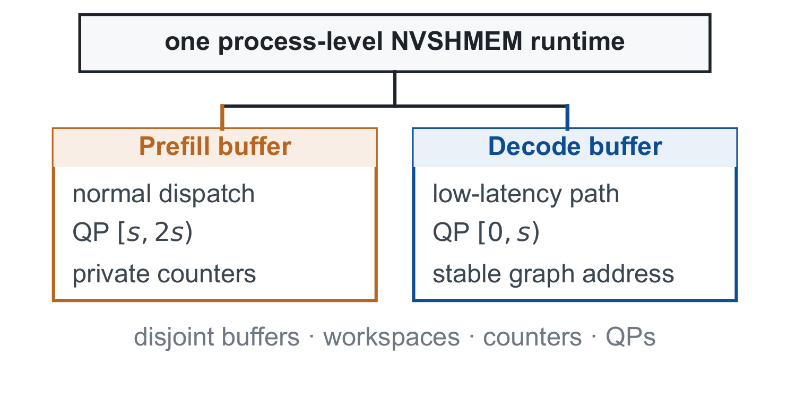
Figure 5 把上述清单画成父子关系：一个 process-level NVSHMEM runtime 下，prefill buffer 走 normal dispatch 并使用 QP $[s,2s)$ 与 private counters；decode buffer 走 low-latency path，使用 QP $[0,s)$ 和 stable graph address。底部强调 buffers、workspaces、counters、QPs 均 disjoint。两条路径仍争用物理 NIC、cache 和剩余 SM，所以状态安全并不自动等于性能隔离；作者用 admission 和独立 communication-SM budget 管理这些共享资源。
为了暴露可插入 D 的 P 边界，作者把 normal DeepEP dispatch 拆在 expert notification 之后：此时 peer 已知道 dispatch shape，但 P 尚未提交 routed data movement。P 可以在后台等待 receive counts，只有 counts 与 turnstile permit 都满足时才移动数据；D 则在自己的 low-latency state 上继续。一个 P buffer 最多挂起一个 dispatch，取消后不能立即复用已经部分推进的状态。由于 device-initiated communication 在 notification 后不可撤销，被放弃的操作必须让 buffer 退休到 quiescent cleanup point，这条生命周期约束防止旧请求结果写入新 KV reservation。
2.4 端到端接入与 segment policy
调度层先固定 D rows、graph state 和 MTP lookahead，再给 P 预留 KV。P 的结果只有在 tensor-parallel worker 验证 reservation 仍属于同一请求后才能晋升为 D；旧 lifetime 的结果直接丢弃，取消必须等待已提交 P 工作 drain 后才复用存储。D graph capture 绑定 phase-owned 输入、metadata、stream route 与稳定 low-latency DeepEP state，后台 P 使用分离的 eager 输入，因此无论 P 是否活跃，同一个 D graph 都能重放。MTP drafting 与 verification 被视为一个 D iteration，在 post-D rendezvous 释放 P 前完成 enqueue。
segment policy 的输入是有序安全边界、当前 D occupancy 和 P pressure，输出是每轮放行的跨度 $K$。论文比较固定 span 1–4 与从已验证的 backend/precision-specific span 中选择的 load-selected policy。较小 $K$ 给 D 更多插入机会，但 rendezvous 与 P enqueue 开销上升；较大 $K$ 减少控制频率，却让 D 更久等在边界。策略只选择性能运行点，不改变 epoch 校验、rank rendezvous、device-order edge 与 phase-state isolation 这四条正确性契约。 这使性能调参和通信安全可以分别验证，也为后续在线自适应留下接口。
3. 实验结果
3.1 工作负载与评测口径
主实验使用 8 张 NVIDIA H20-3E，软件栈为 PyTorch 2.8、CUDA 13.0、NCCL 2.27.7、DeepEP 1.2.1 和 SGLang 0.5.15。BF16/FP8 内部 MoE checkpoint 有 42 层、hidden size 2,560、512 个 routed experts、top-8 routing；双节点使用 16 张 H20-3E 和更大的内部 checkpoint。性能 replay 固定完成 1,265 个请求、128 条 conversation，消费 6,574,104 个输入 token、生成 220,862 个输出 token；headline cell 重复五次，其余单节点 cell 三次，报告 median 与 IQR。主指标是 fixed-workload makespan 与其倒数 completed requests/s，因为训练要等整批 rollout 收齐；同时报告 p99 TTFT、request/trajectory completion 和 mean D wait。
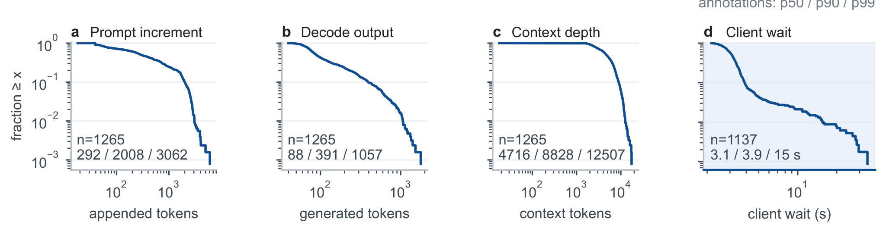
Figure 6 说明实验为何强调 persistent P/D coexistence。1,265 个请求中有 1,137 个依赖 continuation，轨迹最多十轮；新增 prompt 的 p50/p90/p99 是 292/2,008/3,062 token，生成长度为 88/391/1,057 token，保留上下文为 4,716/8,828/12,507 token。第四面板的 client wait p50/p90/p99 为 3.1/3.9/15 秒。四条分布都长尾，意味着某些大 P segment 会横跨多个短 D iteration，而不同工具等待又不断改变相位偏斜。论文把 headline 设置为 continuation 无额外等待，再用 P1-P4 缩放等待向量，属于主动提高 P 压力的系统压力测试；原 trace 结果需单独看。
配置上，H1/H2 是单节点 4 GPU、EP1/ADP2、ATP2/ETP4，分别关闭/开启 MTP；H3/H4 是 8 GPU、EP8/ADP8、ATP1/ETP1，同样区分 MTP。Crossed 配置为 EP8/ADP2、ATP4/ETP1，可切 BF16/FP8 与 MTP，并使用 DeepEP；Two-node 为 EP16/ADP8、ATP2/ETP1。AInfer Normal 与 AInfer-PD 共用引擎和 kernel，前者 strict P priority 且关闭 multiplexing；SGLang 是 whole-stack 外部基线。GSM8K 回归覆盖十种运行组合，所有运行有效，配对 BF16 相对 Normal 的准确率差不超过 2.20 个百分点，但这只是功能回归，不等同于证明所有 agentic 任务质量完全一致。
这套基线设计需要分层解读。同引擎 Normal 对比主要回答“打开完整 P/D 复用后，固定工作量是否更早完成”，能最大限度控制模型、kernel 与请求；Global-Complete、Global-Enqueue、Fine-grained 三档则进一步只动 ordering boundary，才适合归因 turnstile 粒度；SGLang 提供独立系统参照，却同时包含调度器、图执行和 kernel 实现差异，不能把其全部差距归给某个单模块。作者还区分诊断硬件：crossed-cycle 使用 H200，模型无关 rank-skew stress 使用 H20-3E，这些运行不计入性能主结果。复现报告若把诊断与性能数字混在一起，可能错误地把“能稳定完成”解释成“在同一硬件上更快”。
3.2 单节点端到端主结果
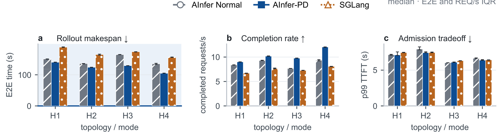
Figure 7 在 H1-H4 无额外 continuation idle 的高 P 压力下比较三套系统。AInfer-PD 相对同引擎 Normal 的 E2E makespan 分别下降 7.1%、8.7%、21.5%、22.5%，相对 SGLang 下降 24.8%-32.9%；因为每次都完成 1,265 请求，中面板 completion rate 与左面板互为倒数。H1/H2 触发 crossed ADP/ATP 路径，H3/H4 的 ATP1 不需要 selective route 或 DeepEP state isolation，因此四组结果混合了“完整通信机制收益”和“底层原位调度收益”，不能把所有差值都归因于 turnstile。
右侧 p99 TTFT 是必要的制衡指标：相对 Normal 只在 -6.3% 到 +1.2% 范围波动，说明单节点 headline 条件下整批完成更快没有靠显著牺牲 admission latency 换取。更长链路上，p99 request completion 相对 Normal 降 21.3%-37.9%、相对 SGLang 降 39.3%-44.0%；trajectory completion 分别降 8.2%-22.7% 与 27.0%-33.4%。这些指标共同支持“固定轨迹集合更快收齐”，但论文没有把该结论外推为任意在线服务的 latency SLO 改善。
3.3 通信安全与边界粒度消融
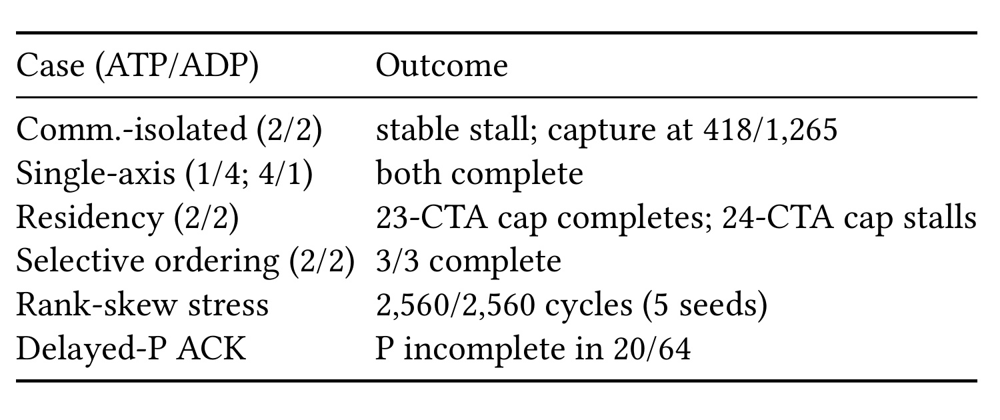
Table 4 把“性能更快”与“通信是否安全”分开。只做 communicator isolation 的 ATP2/ADP2 在 1,265 个请求中稳定停在 418；把任一拓扑轴降为 1 都能完成，说明相交组是关键条件；把每 SM residency 从 24 CTA 限到 23 也可绕开 stall，表明设备常驻资源会触发进展环，但这不是稳健协议。selective ordering 三次完整 replay 都完成，20ms rank-skew 的五个 seed 共 2,560/2,560 cycle 完成。Delayed-P ACK 中 64 轮有 20 轮在 D 确认 enqueue 时 P 仍未完成，直接证明 ACK 没有偷偷退化成 P completion fence。
在 40-step 修复路径窗口，每个观测 rank 有 468 个 eager P full-TP NCCL kernel 和 57 次 D graph replay；注册的冲突 NCCL 对 overlap 为 0ms，但 P compute 与 D 仍有 31.2/31.6ms 重叠，占 6.3%/6.5%。因此机制牺牲的是冲突 collective 对本身的并行，而不是整段 P/D 并行。这个结果也解释了为什么全局 implicit ordering 或单 device connection 虽能消除 stall，却会过度限制其他可安全重叠的工作。
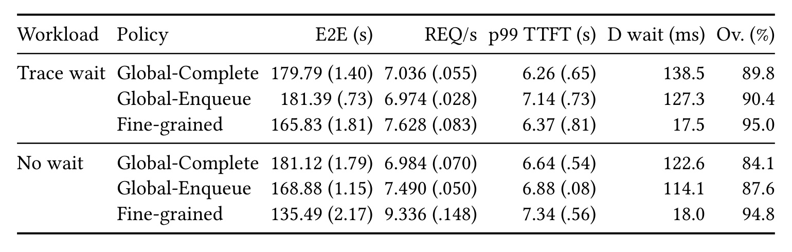
Table 5 固定 BF16、DeepEP、MTP off 与 crossed topology，只改变安全 P/D 的边界策略。Trace-wait 下 Global-Enqueue 的 E2E 181.39s，与 Global-Complete 179.79s 接近；Fine-grained 降到 165.83s，相对 Enqueue 改善 8.6%，mean D wait 从 127.3ms 降至 17.5ms。No-wait 下 Enqueue 已比 Complete 改善 6.8%，Fine-grained 进一步从 168.88s 降到 135.49s，即再降 19.8%，D wait 从 114.1ms 降到 18.0ms。GPU 并发工作比例升到约 95%，但作者明确 Ov. 不是冲突 NCCL 对的 overlap。
这组消融的解释比“异步更快”更细：Global-Enqueue 只证明不等待整段 P GPU completion 有价值，Fine-grained 再证明一个长 P epoch 内反复释放 D 的边界粒度有价值。控制成本也可见：trace-wait/no-wait 中位数需要 432/566 次八 rank rendezvous，每次约 0.93/0.91ms；大量 ACK 发生时 P 尚未完成。若只报告 makespan 而忽略 rendezvous 数和 D wait，就无法判断收益来自真正保护 D，还是来自改变工作量或完成定义。
还有一个容易误读的细节：注册 NCCL 对的零重叠并不否定整套系统的并发收益。AInfer-PD 有意把可能闭环的 D collective 与紧随其后的 P AllReduce 放到同一顺序上，所以这一小段必须串行；真正被保留的是 P 的非冲突通信、专家计算、receive-count 进展以及已经提交的 GPU 工作。Fine-grained 的价值就是把这条顺序边限制在尽可能短的局部，而不是给整轮 P 添加 fence。若替代实现只看到“D 在 P 前”就对整个 P stream 做 synchronize，正确性可能仍成立，性能却会退回 Global-Complete 一类方案。复现时应分别抓 host launch 时间线、CUDA stream 事件和 NCCL kernel 区间，并核对各 rank 的 epoch/endpoint 标识完全一致；只用平均 GPU utilization 无法证明顺序契约真正实现。
3.4 DeepEP、等待压力与策略选择
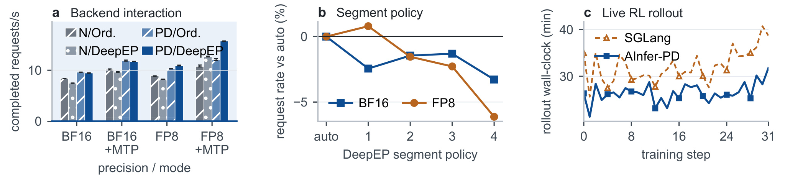
Figure 8a 比较 precision、MTP 与 backend 的交互。在 EP8/ADP2 中，P/D 相对 Normal 的请求率提升在 non-DeepEP 为 11.7%-16.1%，在 DeepEP 为 21.8%-31.9%；完整配置相对 non-DeepEP Normal 高 12.5%-46.1%。这说明保持 D 的 low-latency path 与 P 的 normal path 同时工作是实质贡献，但 DeepEP 自身并非总带来固定正收益：它对 Normal 的影响为 -11.3% 到 +17.8%，对 AInfer-PD 为 -1.7% 到 +30.8%，取决于 precision、MTP 与 scheduling mode。EP8 下两个 phase 合计保留 465.2MiB payload memory，并增加 P metadata 与每 peer 128 个 QP index 中的 12-index 区间；这是隔离的显式资源成本。
Figure 8b 比较 fixed span 1-4 与 runtime selector。六次 selector 都选 span 2；该点在 BF16 最优，在 FP8 距最优不超过 0.8%，而错误固定选择最多损失 6.1%。从 span 1 增到 4，P wait-for-permit 总时间下降 31%-34%，但 D boundary-wait 和 P enqueue time 分别增至 3.9-4.2 倍与 3.6-3.7 倍，显示过粗 segment 会延迟 D、过细则频繁控制。Figure 8c 的两次独立 live-RL 将 32 个对齐 step 累计 rollout 时间从 17.14 小时降到 14.12 小时，降幅 17.6%；不过训练后策略生成的轨迹会分叉，这只能算 operational evidence，不是严格 paired workload。
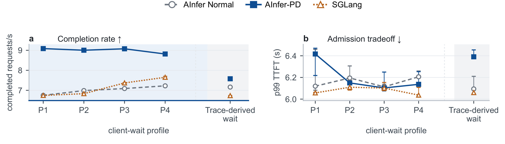
Figure 9 使用 Table 3 定义的 P1-P4：分别把 trace wait 向量乘以 0、0.01、0.03、0.10，对应 p50 从 0 增到 310ms；原 trace 的 p50 为 3,104ms，单独显示在阴影区。P1-P4 下 AInfer-PD 达 8.82-9.09 req/s，Normal/SGLang 为 6.75-7.23/6.75-7.65，前者提升 22.0%-34.6% 与 15.2%-34.7%；p99 TTFT 为 6.10-6.42s，最坏高 4.9%/5.9%。到原 trace wait，makespan 166.93s，只比 Normal/SGLang 低 5.5%/11.1%，说明环境等待越长，可利用的 P/D overlap opportunity 越少。
此外，decode-only 控制在 kernel 相同条件下开启 P/D path 会让 request rate 下降 6.7%。这条负结果非常关键：AInfer-PD 不是应该常驻开启的免费优化，runtime 需要判断是否真的存在并发 P。将 selector 只用于 span 而不用于 activation，会在 P 不活跃时支付 turnstile、phase 路径与调度开销。论文把 online adaptation 留作未来工作，因此生产接入仍需自建触发阈值、冷却机制和 SLO 保护。
3.5 双节点与更深工作量
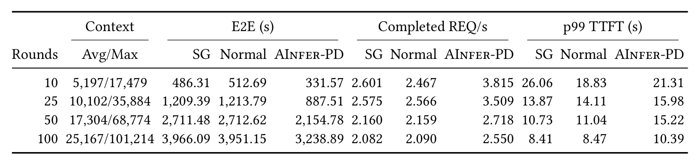
Table 6 使用 16 张 H20-3E、BF16、FA3、MTP off、EP16/ADP8（ATP2、ETP1）、DeepEP 与 32K-token P budget，把 workload depth 从 10 轮提高到 100 轮。每行三套系统处理完全相同的工作，规模从 1,265 到 8,258 请求、6.57M 到 207.83M 输入 token、0.22M 到 2.73M 输出 token。AInfer-PD 相对 Normal 的 E2E 降 18.0%-35.3%，相对 SGLang 降 18.3%-31.8%；各系统三次运行的最大 range/mean 不超过 2.09%，说明完成时间结果在该小样本内较稳定。
代价在 p99 TTFT 上明显放大：相对 Normal 上升 13.2%-37.9%。例如 10 轮时 AInfer-PD E2E 为 331.57s，显著低于 Normal 的 512.69s，但 p99 TTFT 为 21.31s，高于 Normal 的 18.83s；100 轮时完成时间为 3,238.89s 对 3,951.15s，TTFT 为 10.39s 对 8.47s。这证明 completion-oriented admission 可以缩短训练等待，却不自动满足交互式服务的尾延迟目标。更保守的 P budget 或 segment policy 能换回 TTFT，但论文没有给出在线自适应曲线。
总体上，实验链条覆盖了 workload 动机、单节点主结果、故障复现与修复、同引擎粒度消融、后端/精度/MTP 交互、等待敏感性、双节点和 live-RL，证据结构较完整。仍需注意 checkpoint 与 trace 都是匿名内部数据，主规模只到 1-2 节点，且 SGLang 是 whole-stack 对比；可复现者能验证协议不变量与公开 DeepEP 行为，却无法逐数字复现内部 workload。
把所有数字放在同一因果链上，最稳妥的结论是：通信组分离不足以保障 crossed topology 的进展，selective order 与 phase-owned state 让目标路径可并发；在高 P 压力的固定工作量上，这一完整实现通常更快；fine-grained boundary 确实比 whole-epoch enqueue 少等 D；但收益会随 client wait 变长而收窄，并可能在双节点把 p99 TTFT 推高。论文没有证明每个 workload 都同时改善 makespan、吞吐与尾延迟，也没有给出强网络拥塞、rank 故障或超大集群下的结果。因而工程决策应先判断训练瓶颈是不是 rollout completion，再选择 admission 运行点，而不是看到最高百分比就默认打开最激进策略。
从可复现性看，最低限度的验收不应只跑通一个正常样例。首先要构造 ATP 与 ADP 进程组相交、不同 replica 相位错开的拓扑，确认仅分 communicator 时能够稳定复现卡住的 frontier；随后启用 turnstile，检查每个 rank 在同一 epoch、同一 boundary 上依次通过 pre-D 与 post-D 控制相位。其次要让 DeepEP normal 与 low-latency kernel 真正并发，分别记录 buffer 地址、counter、event、workspace 和 QP 区间，验证取消、超时和旧请求返回不会改写新生命周期。最后才比较 fixed-workload makespan，并同时报告每轮完成数、输入输出 token 总量、D wait、TTFT、rendezvous 次数与失败率。若工作量、缓存策略或完成定义不同，即使百分比更高也不能与论文结果直接对齐；若只做性能压测而没有 rank-skew 和 delayed-ACK 控制，也不能声称通信安全已经得到验证。
还应保留一组按时间排序的跨 rank trace：它既能在故障时定位哪个 collective 先发射，也能在成功时确认局部串行没有扩散为全局 fence。对每次策略切换记录当时的 P 队列、D 占用、许可端点和选择跨度，才能把性能波动追溯到负载变化，而非把所有差异笼统归于模型噪声。
这些记录也是回归测试的基线，可防止后端升级后顺序契约静默失效，并便于快速定位。
4. 总结
AInfer-PD 的价值不在于提出又一种 chunked prefill，而在于把分布式 MoE 原位 P/D 复用拆成两份可审计契约：一份约束相交 collective 的跨 rank 顺序，另一份约束 DeepEP 可变状态的 phase ownership。rank-aligned turnstile 只在安全边界插入 D，选择性 stream route 只串行化冲突对；DeepEP 则共享初始化、物理链路和模型/KV，但分离 buffer、counter、workspace、event 与 QP。这样的分层让正确性不依赖“某次压测没死锁”，也避免用全局同步抹掉所有重叠机会。
对 LLM/RL 系统工程，最可迁移的判断有三点。第一，优化 agentic rollout 应以固定轨迹集合的 makespan 为主，并同时守住 TTFT 与 request/trajectory completion；只看 token throughput 会漏掉环境依赖。第二，跨 communicator 的本地 stream 合法不代表全局进展安全，新增并行维度时必须画出 rank 参与集合与 device-order edge。第三，所谓共享 runtime 要区分不可变初始化、物理资源和可变协议状态；phase identity 应显式传递，不能靠 thread/stream 推断。推荐系统中的 MoE 排序或生成式推荐若存在动态小批与后台大批共卡，也可借鉴这套所有权与边界设计，但论文没有直接给出推荐场景实验。
更具体地说，在线推荐的低延迟小批排序可类比 D，离线或近线的大批内容编码、长序列更新可类比 P；若两者共享 MoE 专家通信，调度器也需要明确哪些 collective 相交、哪些状态能够共享。不过推荐请求通常受更严格的尾延迟和流量突发约束，不能直接照搬 completion-first admission。可迁移的是顺序与所有权分析方法，而不是论文中的 span、P budget 或收益数字。
局限至少有四项：其一，顺序证明只覆盖注册 collective 对并假设 matched participation、健康传输和公平进展，不是任意故障下的 deadlock freedom；其二，DeepEP 只隔离协议状态，NIC、cache 和残余 SM 仍共享，极端流量下可能出现性能饥饿；其三，内部模型、trace 与 AInfer 实现未公开，复现只能接近协议而难以对齐数值；其四，评测仅 1-2 节点 H20-3E，缺少更大 EP、异构拓扑和故障注入；其五，双节点 p99 TTFT 上升 13.2%-37.9%，说明 completion policy 不可直接搬到在线低延迟服务；其六，live-RL 轨迹会分叉，17.6% 属于运营性证据，不能视作严格配对因果效果。
后续跟进建议有四条。第一，在公开 DeepEP 上实现最小 phase-owned buffer/QP 原型，用 rank-skew、延迟 ACK、取消与 buffer reuse 做压力和故障注入，优先验证不变量。第二，复现 Global-Complete、Global-Enqueue、Fine-grained ladder，分别记录冲突 NCCL overlap、P compute overlap、D wait 和 rendezvous 开销，防止只测总吞吐。第三，把 activation 与 span 选择联合成在线 controller，以 P occupancy、D queue、TTFT budget 和通信拥塞为状态，检查是否能避免 decode-only 的 6.7% 退化。第四，扩展到更多 collective 对、跨机网络拥塞与节点失效，明确何时应从 in-place 切换到 P/D disaggregation；只有这些边界被覆盖，AInfer-PD 才能从有力的系统原型走向可运营的训练基础设施。